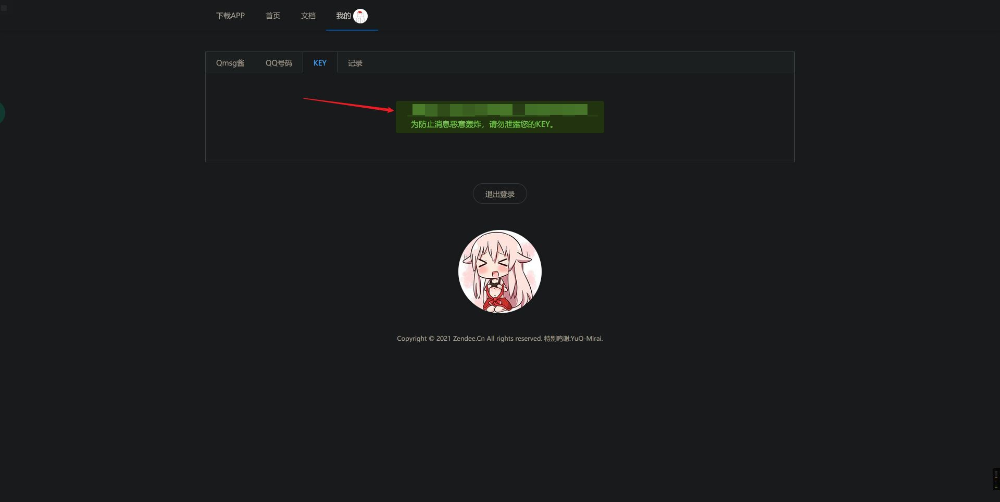

由于一些未知的原因，没法在 GitHub Action 上使用 https://github.com/ReaJason/17wanxiaoCheckin-Actions 进行打卡了，本地部署还不如手动打，买服务器又太贵了，我就想能不能在 Coding 上来进行部署。
创建项目和仓库
首先你要有个 Coding 账号，然后登陆进去，选择 项目->创建项目，选择第一项  名称和标识随意填写，这里填写 test。创建之后点击
名称和标识随意填写，这里填写 test。创建之后点击 代码仓库，选择 新建代码仓库 
构建持续部署
选择 导入外部仓库，然后在 Git 仓库 URL 这一项填入 https://github.com/ReaJason/17wanxiaoCheckin-Actions.git 点击确认就可以导入了。  随后点击
随后点击 持续部署->构建节点，选择 创建构建计划，然后拉到最下面选择 自定义构建过程 
 这里不用做更改，直接确定就好了
这里不用做更改，直接确定就好了  点击切换到文本编辑器
点击切换到文本编辑器  然后使用下面的内容替换进去
然后使用下面的内容替换进去
1 | pipeline { |
后续设置
点击上面的保存后选择触发规则，点击定时触发这里添加一个规则 

然后点击 变量与缓存，新建三个环境变量 
SCKEY——Server 酱的 SCKEY USERNAME——完美校园的登录账号 PASSWORD——完美校园的登录面
如果要多人打卡请参考 原文档
最后返回选择立即构建就可以测试了，成功的话微信会有推送

推送打卡结果到 QQ
打开 Qmsg酱的 官网，根据网站的指引登录账号等操作
1.登录Qmsg网站。
2.选择「Qmsg酱」小姐姐（有多个「Qmsg酱」小姐姐供您选择哦）。
3.添加需要接收消息的QQ号（每个QQ号都需要添加您选择的「Qmsg酱」为QQ好友）。
4.调用接口（查看接口文档）发送GET或POST请求，就能在QQ里收到「Qmsg酱」给你发的消息。
一定要记得添加 Qmsg酱好友！
打开控制台在 KEY 这里复制你的 key 
然后返回仓库打开 17wanxiao.py 这个文件，按下 Ctrl + F 搜索 desp 替换为 msg，如图所示  最后把 314 行的
最后把 314 行的 send_url = f"https://sc.ftqq.com/{sckey}.send" 改为 https://qmsg.zendee.cn/send/{sckey} 就好了，快去运行测试一下吧。